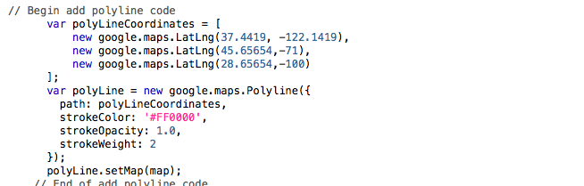

Polylines
The basic google map (which
is fully commented) is taken from
Harvard Uni Google Maps Tutorial. Explore this resource, it's a good refresher on what we have covered.
Copy the code below and paste it in into your file directly after line 36. This code will draw a red line from California to Maine to Texas.

Have a look at the map - have the lines appeared?
You should have something like this:

- Change the latitude, longitude values of your polyline to draw the line where you want.
- Add new verticies to the line by copying and pasting in additional "new google.maps.LatLng(45.65654,-71)," lines, and changing the coordinate values. Make sure each new line ends with a comma, except for the last one that has no comma.
- Change the colour of the line to gray by changing the "#FF0000" to "#110022". This is a hexadecimal colour reference. To see other colour codes, go here.
- Change the thickness of the line by changing the number after the "strokeWeight:" control. Change the opacity of the line by changing the number after the "strokeOpacity:" control.